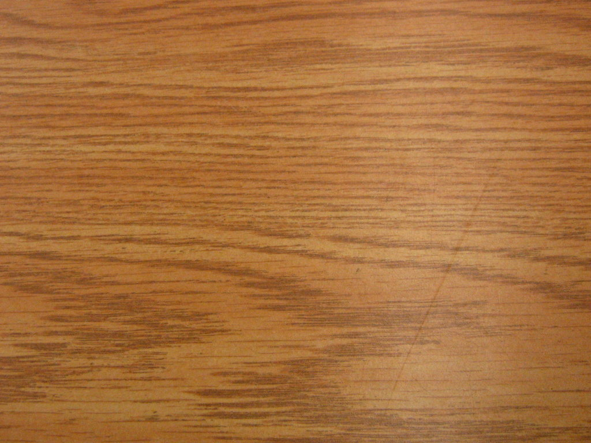

Hey Priya Gondaliya,
As you know my handwritings are pretty bad, so I found a way to make love letters look good. And hence I am writing this E-letter on this website ;) But hey anyway I mean each and every word I am going to type for you :* So brace yourself for an honest yet kick-ass E-letter :D
It all started with just a small spark of feeling inside us. And honestly I never thought that we can make this far (So congratulations to both of us for that :D). Eventually and gradually we became so close that I committed my feeling for you and yes you ACCEPTED it :* (27th June 2014,3:45am).
Even after getting into relationship we have grown together. We got to know each other more and more. And the more I got to know you I fell harder for you. You are one of the most beautiful person I have ever met. I sincerely and solely Love you with all my heart. I love you at your lowest point. I love you with all your pimples on :P. I love you when you send me that side vali smiley. I love that basketball player and a freak.I love that big boss lover.That ever ready girl fits in all my plans. I love you when you talk dirty to me.I love when you are kind of mad at me for some reason and after sometime we make love.I love that 12th topper and CA dropper :*. I love you the way you boast sometimes (50 var sorry ke ;)). I love you when you write long texts to me. You hate long distance relationship and you are still happy with me and I love you for that, and I will never make you regret that decision of yours.
Talking to you daily has been my addiction. Every night I sleep with a thought of you on my mind and every morning I open my eyes,I get up with a hope of getting a message from you :D After you got into my life there has been lot of changes. I think differently now. I never thought that a girl can affect me this much. Every thing I do, I do it thinking what would Priya think of it.I owe you a lifetime for this.
It's not that always we are this cute. We do fight sometimes, but no road is that straight. And after every fight we are back together with something about each other.I know you hate it when I don't reply you fast.You hate it when we cannot talk once in the day.And you completely hate my PJs :P.You hate it when I don't even use smiley ;). And I try to improve every time :D. And ya I hate it when you don't say I LOVE YOU at night.
I think it's getting longer and ghanu badhu VADHI GYU hase.I just want you to remember that no matter what happens in our lives I'll always be there for you. I respect your every decision and you are free to take them. Be yourself and have fun. And keep loving me until it fades :)
I Love you Partner :D
Yours,
Pagal :P

When words leave off, music begins.